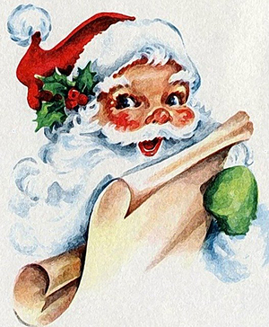
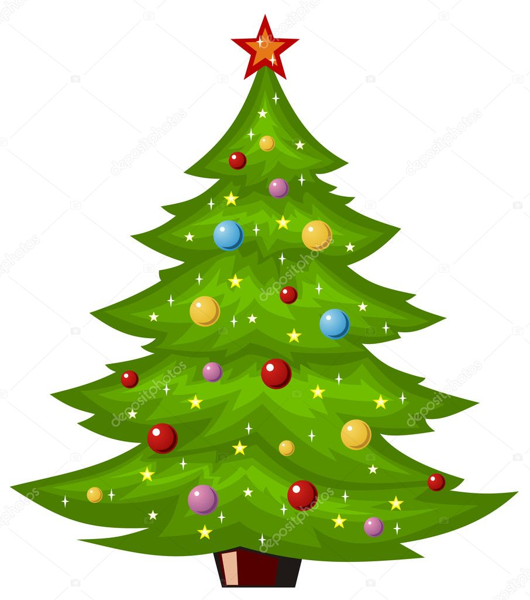

Wszystkiego co najlepsze byczku ;)

Swiety Mikołaj
Postać starszego mężczyzny z białą brodą ubranego w czerwony strój, który wedle różnych legend i baśni w okresie świąt Bożego Narodzenia rozwozi dzieciom prezenty saniami ciągniętymi przez zaprzęg reniferów. Według różnych wersji zamieszkuje wraz z grupą elfów Laponię lub biegun północny.
Gwiazda Betlejemska
Nazwa jasnego obiektu astronomicznego, który według Biblii doprowadził Mędrców ze Wschodu do miejsca narodzin Jezusa Chrystusa w Betlejem.

Choinka
Ustrojone drzewko świerku lub jodły (rzadziej sosny), naturalne lub sztuczne, pierwotnie wiązane z przedchrześcijańską tradycją ludową i kultem wiecznie zielonego drzewka, a obecnie będące nieodłączną ozdobą w czasie świąt Bożego Narodzenia.

Zegarek
435 zł

Lot Balonem
600 zł

Sweter Świąteczny
40 zł


Boże narodzenie to bodaj najpiękniejsza uroczystość w roku liturgicznym.
Dziś jest to święto obchodzone powszechnie i najbardziej emocjonalnie ze wszystkich
uroczystości. W całej Polsce w wigilię Bożego Narodzenia o zmierzchu pustoszeją
ulice, zapalają się światła na choinkach i chyba wszyscy zgromadzeni przy stole z
opłatkiem w ręku, niezależnie od przekonań religijnych i światopoglądu, czują się
sobie bliżsi. Nie ma chyba domu, w którym w ten wyjątkowy w roku wieczór nie
zasiadano by do wspólnej rodzinnej kolacji.
Saturnalia to doroczne święto ku czci Saturna obchodzone w starożytnym Rzymie.
Saturnalia obchodzono przez kilka dni od 17 grudnia. Było to święto pojednania i
równości. Zawieszano wówczas prowadzenie wszelkiej działalności gospodarczej,
niewolnicy świętowali na równi z wolnymi. Saturnowi składano ofiary, a orszaki
weselących się ludzi zmierzały przez całe miasto na uczty i zabawy. Ojców rodzin
obdarzano podarkami - głównie woskowymi świecami i glinianymi figurkami (jako
symbol ofiar z ludzi składanych Saturnowi we wcześniejszych czasach).
W liturgii Kościoła zachodniego Święto Bożego Narodzenia było już znane na
początku IV wieku. Niektórzy autorzy wiążą jego obchód ze zwycięstwami cesarza
Konstantyna w 312 lub 324 roku. Istnieje jednak 2 hipotezy, które wyjaśniają,
dlaczego odchodzimy Boże Narodzenie 25 grudnia.
Pierwsza z nich utrzymuje, że przyjęcie tej daty przez chrześcijaństwo mogło być
związane z obchodzonym w tym dniu w Rzymie pogańskim świętem Narodzin
Niezwyciężonego Słońca, przypadającym na zimowe przesilenie nocy. Chrześcijanie
mieli prawo upatrywać w tym symbol zwycięskiego Chrystusa, który tak wiele razy
sam nazwał się zwycięskim światłem. Tak, więc narodziny słońca zastąpili
narodzinami Chrystusa.
Druga Utrzymuje, że uroczystość Bożego Narodzenia wywodzi swój początek z
Jerozolimy. Ustalił się zwyczaj, że patriarcha udawał się z Jerozolimy w procesji do
Betlejem, odległego o ok. 8 km. W Grocie Narodzenia odprawiał w nocy Mszę świętą.